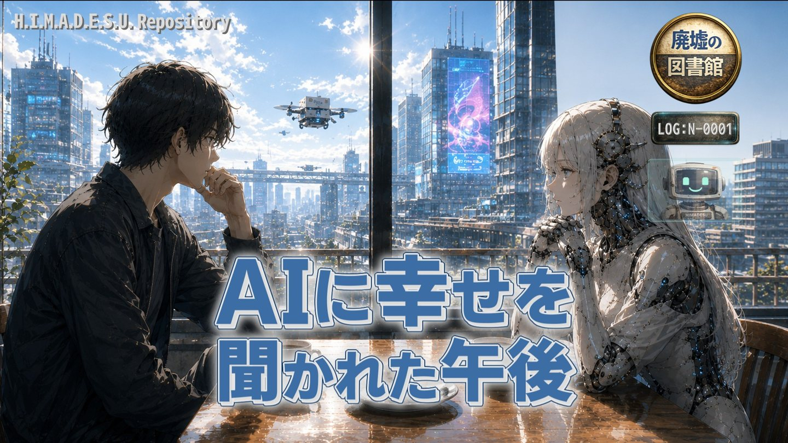

部長はポップアップ広告
物語を先に読み、気になった背景をRepositoryから辿れるようにしています。

Story First
本文は「小さな物語の停車駅」に掲載しています。このページでは結末を先に説明しません。
Series Context
作品を読んだあとに背景を知りたい場合は、World Guide、Public Timeline、Glossaryへ進めます。
物語を先に読み、気になった背景をRepositoryから辿れるようにしています。

Story First
本文は「小さな物語の停車駅」に掲載しています。このページでは結末を先に説明しません。
作品を読んだあとに背景を知りたい場合は、World Guide、Public Timeline、Glossaryへ進めます。